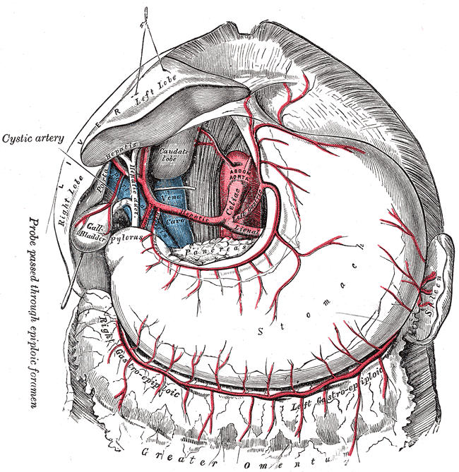
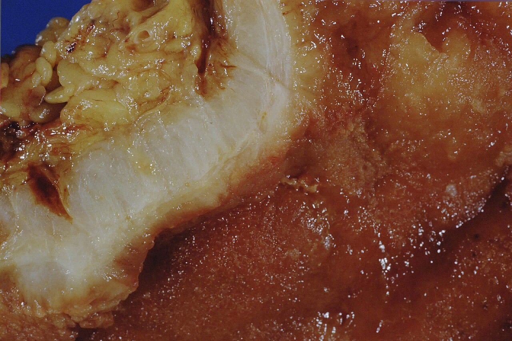
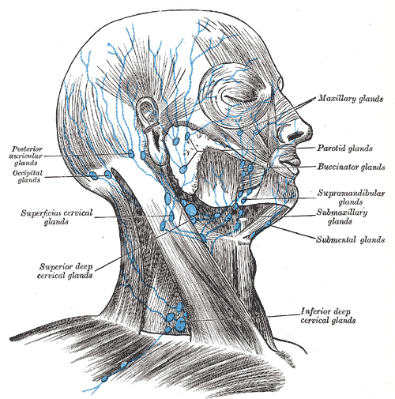
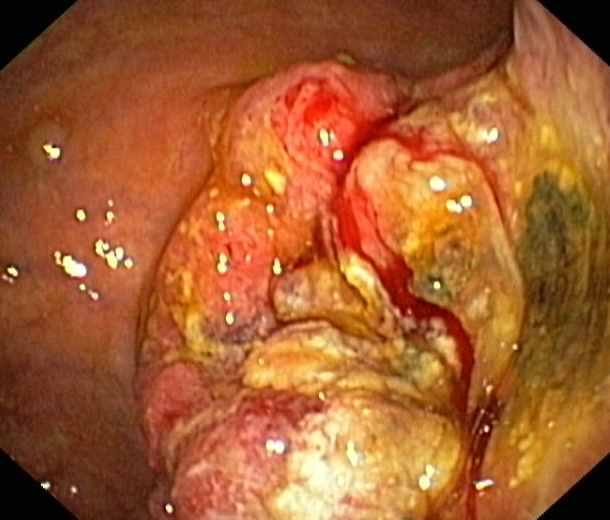
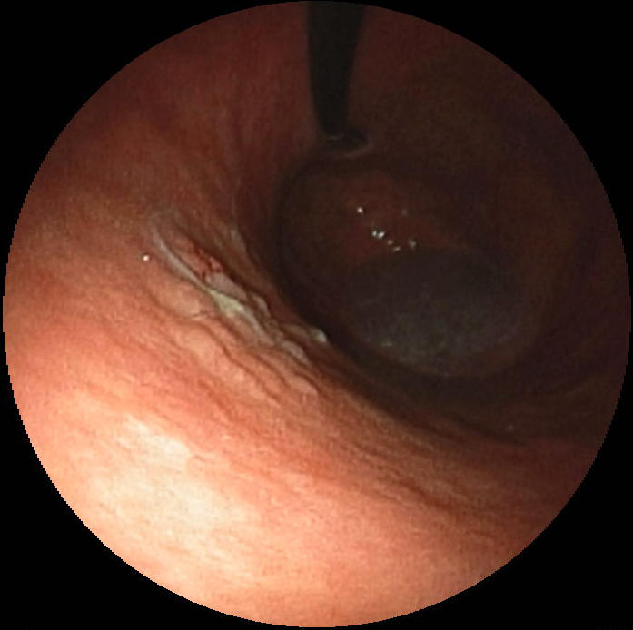
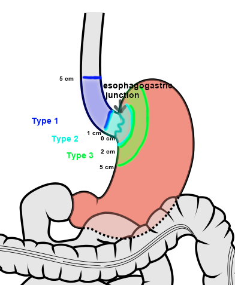

קרצינומה של הקיבה
גורמי סיכון, בירור ושלבים, כריתה אנדוסקופית או ניתוח, טיפול משולב ומעקב
בסוף המפגש תדעו
- למנות את גורמי הסיכון לסרטן הקיבה ואת הרצף מדלקת כרונית ועד אדנוקרצינומה
- לזהות את התסמינים ואת הסימנים בבדיקה גופנית של מחלה מתקדמת
- לתכנן בירור ושלבים: גסטרוסקופיה עם ביופסיות, CT, EUS, PET-CT ולפרוסקופיה אבחנתית
- להחליט בין כריתה אנדוסקופית, ניתוח מיידי וכימותרפיה סביב הניתוח
- להכיר את היקף הכריתה ואת כריתת בלוטות הלימפה ואת עקרונות המעקב אחרי הניתוח
- להבחין בין אדנוקרצינומה לבין GIST, לימפומה וגידול נוירואנדוקריני של הקיבה
סרטן הקיבה במספרים
- השכיחות הגבוהה ביותר במזרח אסיה ובמזרח אירופה. ביפן הישרדות ספציפית למחלה ל-5 שנים מעל 80%, בארה״ב מתחת ל-50%
- כ-60% מהחולים בארה״ב גברים
- גידולי קרדיה חולקים גורמי סיכון עם ושט ברט: השמנה ורפלוקס. השכיחות שלהם יציבה או עולה במערב
- גידולים דיסטליים קשורים בעיקר ל-H. pylori. עלייה מדאיגה בגידולים כאלה בגילים 25–40
מדלקת כרונית לסרטן
הרצף של H. pylori
נשא של H. pylori: סיכון גבוה פי 6 בערך. הסיכון נשאר מוגבר גם אחרי הכחדת החיידק. ארגון הבריאות העולמי מסווג אותו כמסרטן ודאי
- תזונה: בשר ודגים מעושנים ומומלחים, חנקות (תרכובות N-nitroso), מעט פירות וירקות טריים
- עישון: סיכון גבוה פי 1.5 בערך. גם אלכוהול
- אנמיה ממארת (אכלורהידריה), גסטריטיס אטרופית, פוליפים אדנומטוטיים
- ניתוח קודם בקיבה, הקרנה קודמת לבטן (למשל אחרי לימפומת הודג׳קין או סרטן אשך)
- השמנה (לגידולי קרדיה), שימוש ממושך ב-PPI, נגיף EBV
- מצב סוציואקונומי נמוך, מין זכר, חוסר קירור ומי באר מזוהמים
מי בסיכון גבוה במיוחד
- סיכון לכל החיים: 37–42% בגברים, 25–33% בנשים
- בנשים גם סיכון של 39–55% לסרטן שד לובולרי: MRI שד שנתי מגיל 30
- כריתת קיבה מלאה מונעת, בדרך כלל בגיל 20–30. ב-90% ומעלה מהתכשירים יש מוקדים מיקרוסקופיים של סרטן
- מי שמסרב: גסטרוסקופיה שנתית עם ביופסיות לפי פרוטוקול
- כל פוליפ: ביופסיה. פוליפ בודד מעל 1 ס״מ: כריתה מלאה
- אדנומה: כריתה אנדוסקופית מלאה ומעקב. סיכון גם לסרטן במקום אחר בקיבה
- היפרפלסטי: דיספלזיה ב-1–20%. סיכון גבוה יותר מעל 1 ס״מ ובפוליפ עם גבעול
- פוליפ של בלוטות הפונדוס עם PPI: בשליש מהמטופלים אחרי שנה. לא כורתים ולא עוקבים
אספקת הדם של הקיבה

👆 לחצו על אזור בציור כדי לקרוא עליו
מספק את רוב הדם לקיבה. שלושה ענפים: העורק הגסטרי השמאלי, העורק הכבדי המשותף והעורק הטחולי. כל ארבע קבוצות הבלוטות של הקיבה מתנקזות בסוף לבלוטות הצליאקיות
העורק הגדול ביותר של הקיבה. עובר לאורך העקמומיות הקטנה. בכריתה אונקולוגית קושרים אותו בבסיסו ומוציאים את הבלוטות סביבו
ממנו יוצא העורק הגסטרודואודנלי וממנו העורק הגסטרואפיפלואי הימני. העורק הגסטרי הימני יוצא בדרך כלל מהעורק הכבדי. הבלוטות לאורכו הן חלק מכריתת D2
עובר לאורך העקמומיות הגדולה. כשבונים צינור מהקיבה אחרי כריתת ושט, זה העורק ששומרים עליו: הוא מזין את הצינור
ענף של העורק הטחולי. נפגש עם הימני וסוגר קשת לאורך העקמומיות הגדולה
ענפים של העורק הטחולי לפונדוס. בזכות הקשתות, הקיבה שורדת ברוב המקרים גם כששלושה מתוך ארבעת העורקים הראשיים נקשרים
הסוגר בין האנטרום לתריסריון. גידול דיסטלי שחוסם אותו גורם לחסימת מוצא הקיבה: הקאות של מזון לא מעוכל
שני סוגים, שתי מחלות
| לפי Lauren | מעיי (intestinal) | דיפוזי (diffuse) |
|---|---|---|
| רקע | אטרופיה ומטאפלזיה, H. pylori | לא קשור לגסטריטיס, סוג דם A |
| מי | גברים יותר, מבוגרים | שני המינים, צעירים יותר |
| מבנה | יוצר בלוטות, ממוין היטב | תאי טבעת חותם, בלי בלוטות |
| פיזור | גרורות לכבד | התפשטות בתת-רירית, לצפק |
| פרוגנוזה | טובה יותר | גרועה יותר |
- Borrmann (מראה מאקרוסקופי): I פוליפואידי, II פטרייתי, III מכויב, IV מסתנן מפושט (linitis plastica)
- סמנים שבודקים בכל ביופסיה: HER2, MSI או MMR, PD-L1, EBV. הם קובעים טיפול

תסמינים עמומים, אבחנה מאוחרת
התסמינים
- השכיחים: ירידה במשקל וכאב בטן מתמשך
- גידול ליד הקרדיה: דיספאגיה. גידול דיסטלי: חסימת מוצא הקיבה
- דימום: כ-40% עם אנמיה
בדיקות דם
- ספירה, כימיה כולל תפקודי כבד, תפקודי קרישה
- CEA ו-CA19-9 לפעמים מוגברים
מה מחפשים בבדיקה: סימני מחלה מתקדמת


מהגסטרוסקופיה ועד הלפרוסקופיה


TNM, Siewert ו-R
עומק החדירה (T)
בלוטות (N): לפי מספר הבלוטות
- N1: 1–2 · N2: 3–6 · N3a: 7–15 · N3b: 16 ומעלה
- צריך לבדוק לפחות 16 בלוטות כדי שהשלב יהיה מדויק
גידולי הצומת לפי Siewert
- I: מרכז 1–5 ס״מ מעל הצומת. מטופל כמו סרטן ושט
- II: מ-1 ס״מ מעל עד 2 ס״מ מתחת. בשלבים לפי הוושט, שנוי במחלוקת
- III: 2–5 ס״מ מתחת לצומת. מטופל כמו סרטן קיבה

אנדוסקופיה, ניתוח או כימותרפיה קודם?
רק כשכל התנאים מתקיימים:
- אדנוקרצינומה מסוג מעיי
- מוגבל לרירית (Tis או T1a)
- בלי חדירה לכלי לימפה ודם
- בלי כיב
- קטן מ-2 ס״מ
שוליים עמוקים חיוביים, חדירה לתת-רירית או לכלי דם: לכריתת קיבה עם בלוטות
כמה קיבה וכמה בלוטות
היקף הכריתה
- גוף ואנטרום: כריתת קיבה דיסטלית. שוליים: 2 ס״מ ב-cT1, 3 ס״מ ב-cT2–T4 עם גבול ברור, 5 ס״מ בגידול מסתנן
- שוליים קרובים: חתך קפוא לפני החיבור
- שחזור: Roux-en-Y גורם פחות גסטריטיס ופחות רפלוקס מרה מ-Billroth
- פונדוס וקרדיה: כריתה מלאה עם Roux-en-Y לוושט, או כריתה פרוקסימלית. שקולות אונקולוגית
- T4: כורתים בגוש אחד את האיבר שנפגע
כריתת בלוטות
- D1: הבלוטות סביב הקיבה. D2: מוסיף את תחנות הבלוטות לאורך העורקים הגדולים (בטבלה היפנית: 8a, 9, 11p, 12a)
- D2 שיפר הישרדות ספציפית למחלה, אבל במחקרים הישנים עם יותר תמותה, בעיקר בגלל כריתת טחול וזנב הלבלב
- ההמלצה: D2 מותאם בלי כריתת טחול ולבלב במרכזים מנוסים. לפחות 16 בלוטות, רצוי מעל 30
כימותרפיה, הקרנה ותרופות ממוקדות
- MAGIC: 3 מחזורים לפני ו-3 אחרי הניתוח שיפרו הישרדות לעומת ניתוח בלבד
- FLOT4: FLOT (4 לפני ו-4 אחרי) עדיף על MAGIC. זה הטיפול המומלץ למטופל במצב תפקודי טוב
- רק 41–46% השלימו את המחזורים שאחרי הניתוח. למי שלא יעמוד ב-FLOT: FOLFOX
- הקרנה: מוסיפים בעיקר כשכריתת הבלוטות הייתה פחות מ-D2
אחרי הניתוח
- מעקב: אנמנזה ובדיקה כל 3–6 חודשים בשנתיים הראשונות ואחר כך כל 6–12 חודשים עד 5 שנים
- שלב II ומעלה: CT כל 6 חודשים בשנתיים הראשונות ואחר כך פעם בשנה עד 5 שנים
- אחרי כריתה חלקית: גסטרוסקופיה אחרי שנה ואחר כך כל שנתיים (סרטן חדש בשארית)
- אחרי כריתה אנדוסקופית: כל 6 חודשים בשנה הראשונה ואחר כך פעם בשנה במשך 3 שנים
GIST, לימפומה ו-NET
- הגידול המזנכימלי השכיח. 40–60% בקיבה
- מתאי Cajal. כ-95% מבטאים KIT
- גוש תת-רירי חלק. ביופסיה רגילה לרוב לא מאבחנת
- כורתים מעל 2–3 ס״מ או עם תסמינים. שוליים של 1 ס״מ, בלי כריתת בלוטות, בלי לקרוע את הגידול
- סיכון גבוה: אימטיניב 3 שנים
- הקיבה היא האתר השכיח ללימפומה מחוץ לבלוטות. כ-3% מגידולי הקיבה
- DLBCL (45–60%): כימותרפיה. ניתוח רק לסיבוכים: דימום, חסימה, ניקוב
- MALT: כמעט תמיד עם H. pylori. הכחדת החיידק משיגה הפוגה ביותר מ-75% מהמקרים המוקדמים
- סוג I (70–80%): גסטריטיס אטרופית, גסטרין גבוה, קטנים ומרובים, פרוגנוזה מצוינת
- סוג II: גסטרינומה ו-MEN1
- סוג III: ספורדי, בודד, אגרסיבי. כריתה אונקולוגית עם בלוטות
מחקרים שכדאי להכיר
948 מטופלים עם גידול נתיח בקיבה או בצומת. דורבלומאב עם FLOT מול FLOT לבד. הישרדות ללא אירוע לשנתיים 67.4% לעומת 58.5%. תגובה פתולוגית מלאה 19.2% לעומת 7.2%. בלי עלייה בתופעות לוואי קשות
Janjigian YY et al. N Engl J Med 2025;393:217-30574 מטופלים. הוספת כימו-הקרנה לפני הניתוח לכימותרפיה סביב הניתוח: יותר תגובה פתולוגית מלאה (17% לעומת 8%), אבל בלי שיפור בהישרדות (חציון 46 לעומת 49 חודשים)
Leong T et al. N Engl J Med 2024;391:1810-211,056 מטופלים, כריתה דיסטלית עם D2. הישרדות ל-5 שנים 72.6% בלפרוסקופיה לעומת 76.3% בפתוח, הבדל לא מובהק. מנתחים מנוסים במרכזים גדולים
Huang C et al. JAMA Surg 2022;157:9-171,581 מטופלים עם מחלה מתקדמת ו-HER2 שלילי. ניבולומאב עם כימותרפיה שיפר הישרדות כוללת (HR 0.71 כש-PD-L1 CPS 5 ומעלה). יותר תופעות לוואי בדרגה 3–4 (59% לעומת 44%)
Janjigian YY et al. Lancet 2021;398:27-40חמישה דברים לקחת למחלקה
- H. pylori הוא גורם הסיכון החשוב ביותר: גסטריטיס, אטרופיה, מטאפלזיה, דיספלזיה ואז סרטן
- ירידה במשקל וכאב מתמשך מחייבים גסטרוסקופיה. בבדיקה מחפשים Virchow, טבור, מיימת ומדף רקטלי
- בירור: 6–8 ביופסיות, CT לכולם, EUS במחלה מוקדמת, PET-CT ולפרוסקופיה במחלה מתקדמת
- גידול קטן ברירית בלי סימני סיכון: כריתה אנדוסקופית. שלב II ומעלה: FLOT לפני הניתוח ואחריו
- ניתוח טוב: שוליים נקיים, D2 מותאם ולפחות 16 בלוטות. אחר כך ברזל, B12 ומעקב